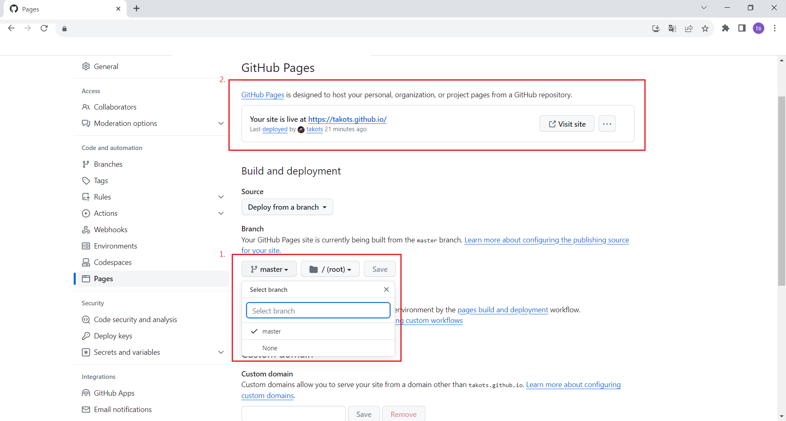
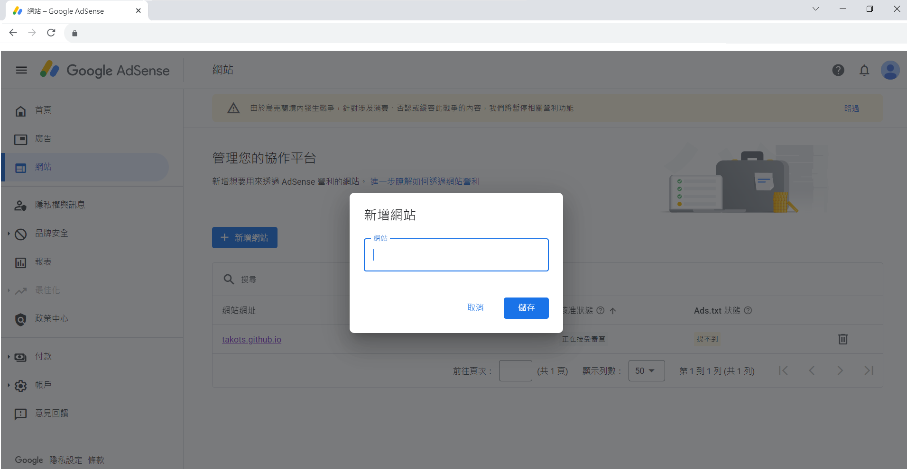
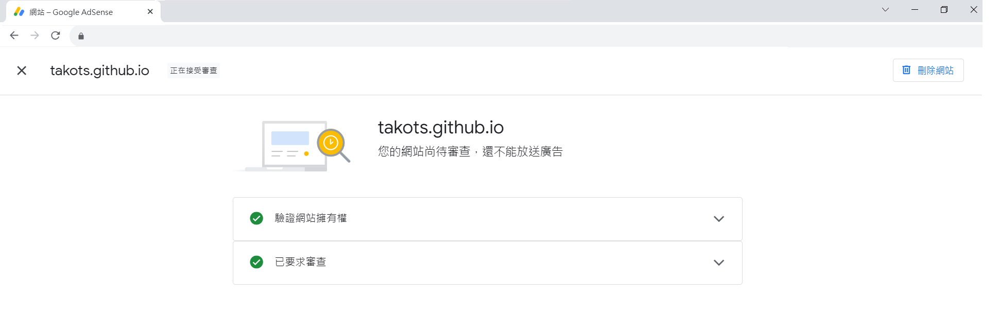
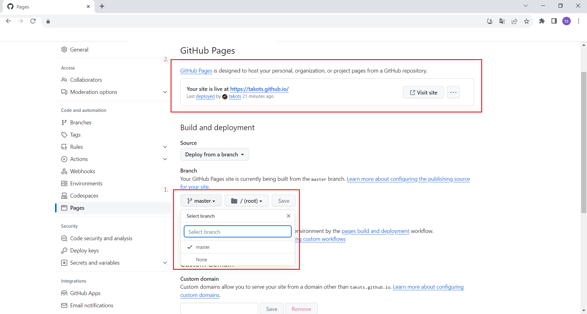
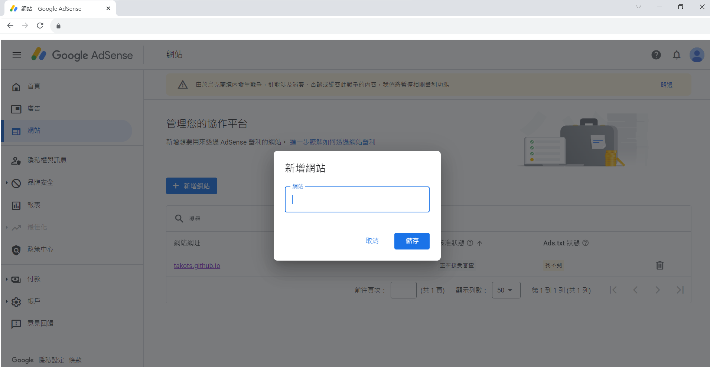
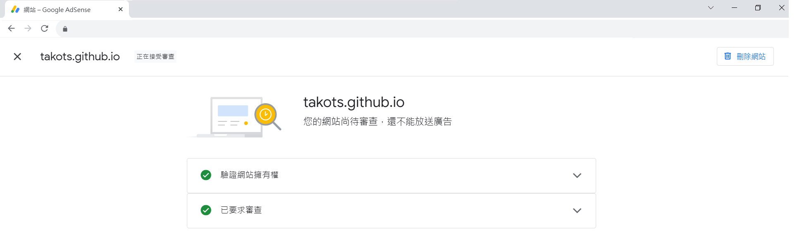

建立網站在git page
new repositories
https://github.com/
Your Repositories / New Repositories
Repository name / username.github.io (固定格式)
ex: Repository name
| Repository name |
https://takots.github.io/Repository name |
| 01 |
https://takots.github.io/01/ |
| a01.github.io |
https://takots.github.io/a01.github.io/ |
| takots.github.io |
https://takots.github.io/ |
git page start
Your Repositories / takots.github.io / Settings / Pages
先推個上來 index.html
branch name: master (預設)
接著就可以切到master這個分支
如果都沒推任何東西的話這邊select branch 會只有main分支

save 後靜待幾分鐘就會有連結了
安插廣告
google adsense
https://adsense.google.com/intl/zh-TW_tw/start/
網站 / 新增網站 / 輸入 git page / 進行審核


廣告未顯示
確保你的存儲庫是公開的，以便可以通過 GitHub Pages 訪問
Google AdSense 有一些政策和條款，請務必遵守這些條款以確保你的帳戶不被禁用。此外，廣告可能不會立即顯示，可能需要一些時間來進行審核。
審核過程可能需要二到四週的時間。
建立網站在git page
new repositories
https://github.com/
Your Repositories / New Repositories
Repository name / username.github.io (固定格式)
ex: Repository name
git page start
Your Repositories / takots.github.io / Settings / Pages
先推個上來 index.html
branch name: master (預設)
接著就可以切到master這個分支
如果都沒推任何東西的話這邊select branch 會只有main分支

save 後靜待幾分鐘就會有連結了
安插廣告
google adsense
https://adsense.google.com/intl/zh-TW_tw/start/
網站 / 新增網站 / 輸入 git page / 進行審核


廣告未顯示
確保你的存儲庫是公開的，以便可以通過 GitHub Pages 訪問
Google AdSense 有一些政策和條款，請務必遵守這些條款以確保你的帳戶不被禁用。此外，廣告可能不會立即顯示，可能需要一些時間來進行審核。
審核過程可能需要二到四週的時間。